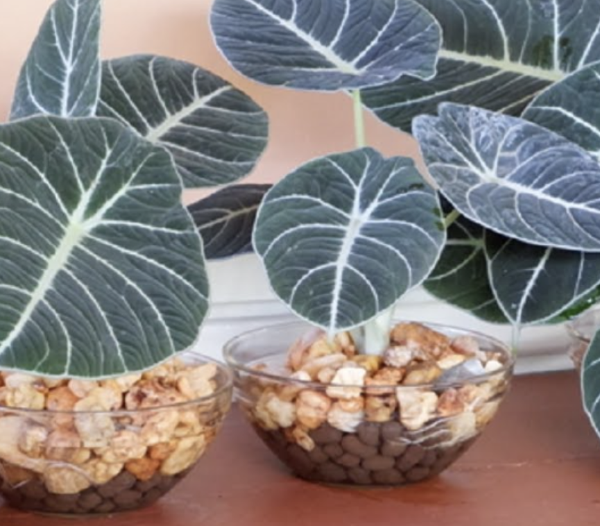
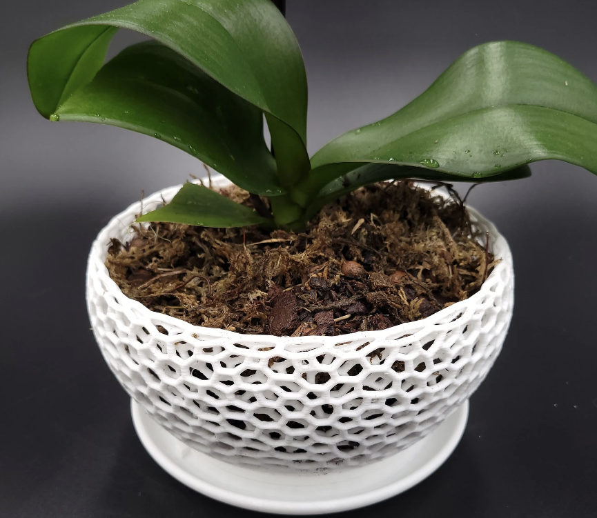

Growing Mediums
When it comes to growing mediums, there are lot more options than you may think. I will be touching on just a handful of the most common. Certain plants grow well with different mediums. Of course we all know most plants grow in soil, however, there are a variety of materials which can be added to the soil to make it fit your specific needs, and some other options that don't involve any soil at all.
Succulents and Cacti

Succulents and cacti require very well-draining potting mixture. In nature, they are typically found in gravelly or sandy soil. When growing these plants indoors, we want to mimic their natural environment with a gritty, fast-draining soil mixture. Perlite and pumice are often added to achieve this. If their growing medium does not provide adquate drainage, these types of plants are prone to root rot. Pots with drainage holes are strongly recommended. Using a terracotta pot cabable of absorbing excess moisture can also aid in preventing root rot.
Tropical Plants

Just as with dry climate plants, well-draining soil is essential for tropical species, too. We also want this mixture to be able to retain water without becoming too heavy. Some additives used to accomplish this are perlite, sphagnum or peat moss, coconut coir, and LECA (lightweight expanded clay aggregate). LECA has recently been gaining in popularity, while moss has begun to fall out of favor due to the harmful environmental impact of harvesting it. Containers with holes for drainage are preferred, but if you are working with one that lacks a hole for drainage, it is imperative to create more space within the container by using a higher ratio of the soil additive of choice. Although it may sound counterintuitive, many tropical plants also do amazingly well when grown hydroponically, that is, just in water. Utilizing a hydroponic setup will spare you the cost of soil, bring an element of uniqueness, and allow you to see the gorgeous root systems.
Orchids

Orchids have very specific needs. They are epiphytes, meaning they actually grow on trees in the wild, rather than in the ground. Because of this, their roots have evolved to love air, therefore they do not take well to regular soil, which is far too compact for them. It is crucial to use bark, coconut husk, sphagnum moss, or a combination of these mediums to provide plenty of air circulation and gaps for the roots to grow. In fact, orchids like air so much, they can even grow without being potted at all. Many people choose to hang their orchids from a ceiling, with the roots dangling. Special orchid pots are available, that are made with slits or holes along the side for optimal air flow.